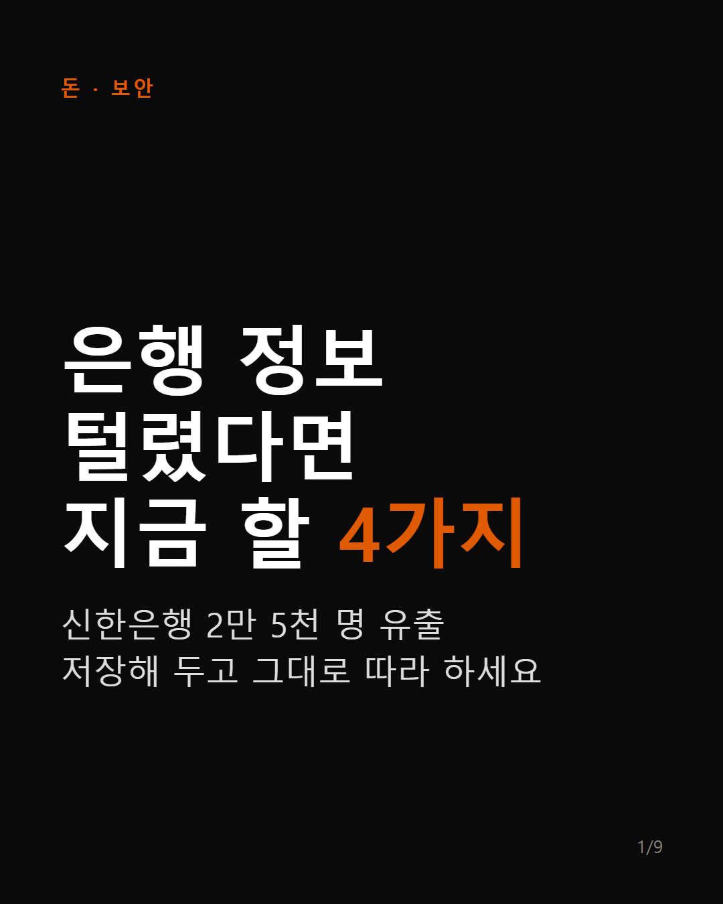
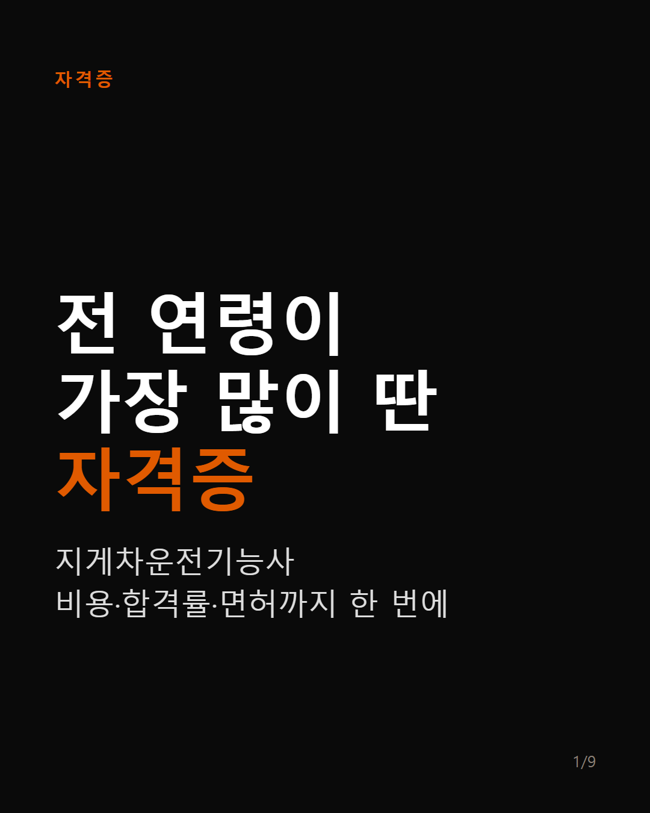

카드뉴스 모아보기
돈·취업·생활 꿀팁
카드를 누르면 인스타그램 게시물로,
아래 버튼은 공식 신청·조회 페이지로 바로 갑니다
🔔 @gatnet777 팔로우하고 새 카드 받기

돈 · 보안 · 2026.10.01
은행 정보 털렸다면 지금 할 4가지
개인정보노출자 등록
엠세이퍼 가입사실 조회

자격증 · 2026.10.01
전 연령이 가장 많이 딴 자격증, 지게차운전기능사 비용·합격률
큐넷 시험정보·접수
고용24 내일배움카드